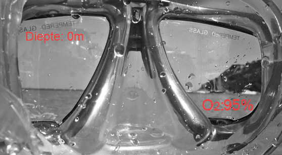
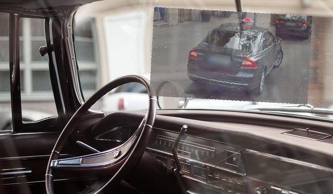
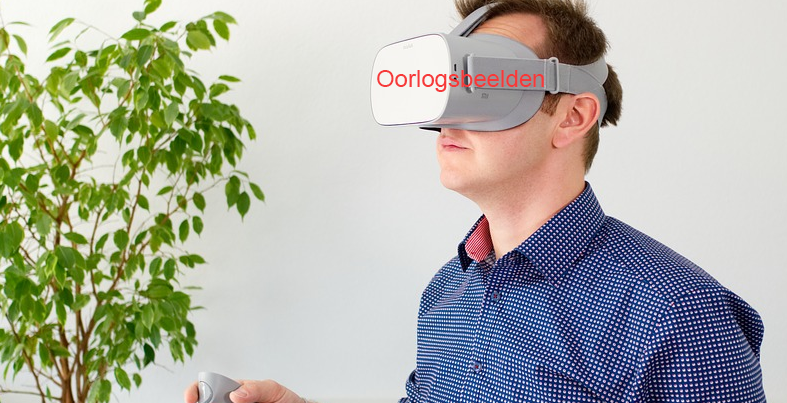

Bij deze opdracht ga ik voor de categorieën sport, auto's en musea AR en VR concepten bedenken die deze drie verschillende onderwerpen zullen ondersteunen.
Met deze categorie heb ik gekozen om mij te focussen op de sport: duiken. Bij het duiken moet er gelet worden op veel aspecten zoals de hoeveelheid zuurstof in de tank, hoe diep iemand zit en hoe lang iemand nog onder water kan blijven. Mijn concept is om deze cruciale informatie te integreren in de duikbril. De gebruiker zal een projectie zien met deze informatie op het glas van de bril, hiermee zal iemand zich beter kunnen focussen op de omgeving. Naast het tonen van deze cruciale informatie kan de bril ook informatie geven over objecten, planten of dieren die de gebruiker ziet, zo zou bijvoorbeeld de naam van een dier in de projectie getoond kunnen worden.
Voor de categorie auto's maakt mijn idee gebruik van augmented reality, dit zal toegepast worden wanneer de auto achteruit wilt rijden. Wanneer de bestuurder de auto in de versnelling zet om achteruit te rijden. Zal een live-video op de voorruit geprojecteerd worden met beeld van de situatie achter de auto. Naast het projecteren van het beeld achter de auto, zal het systeem ook visueel waarschuwen wanneer de bestuurder bijna iets raakt. Deze waarschuwing zal ook de resterende afstand tussen de auto en het object tonen. Met behulp van dit systeem zal het voor een bestuurder veiliger en makkelijker worden om achteruit te rijden in een auto.
In de categorie musea maakt mijn concept gebruik van virtual reality brillen die bezoekers op kunnen doen bij bepaalde delen van het museum. Deze brillen zullen ingezet worden om de bezoekers een overtuigende ervaring te geven hoe bijvoorbeeld een oorlog er aan toe ging. Deze brillen zullen de bezoekers het idee geven alsof ze er zelf bij zijn, dit is erg belangrijk. Jongeren en ouderen moeten namelijk steeds meer geprikkeld worden om iets interessant en leuk te vinden. Door deze technologie in musea toe te passen, zal de interesse van jongeren dan ook toe nemen.
Na het bedenken en uitwerken van mijn concepten, ben ik met de opdracht begonnen om een interessant concept van iemand anders te bekijken en onderzoeken. In de bovenstaande video kan gezien worden hoe in een supermarkt iemand met zijn/haar telefoon producten kan filmen. Wanneer een door de winkel gekozen product gefilmd wordt zal er op iemands telefoon getoond worden dat zij korting krijgen op het product. Deze techniek kan gebruikt worden om voor iedere klant andere kortingen mogelijk te maken. Door persoonlijke kortingen zullen de klanten dan ook vaker naar de winkel terugkomen om hun boodschappen te doen.
Door: https://ar.team
Ik vond dit onderwerp zelf erg interessant, door de opdrachten te maken en het hoorcollege bij te wonen, heb ik veel nieuwe informatie gekregen over het onderwerp. Zelf heb ik een virtual reality bril van Samsung, deze bril was dan ook mijn eerste kennismaking met virtual reality. Daarom vond ik het ook erg leuk om meer te weten te komen over dit onderwerp. Ik hoop dat ik de informatie die ik deze week door mijn onderzoek en door de les heb geleerd, kan gebruiken in de komende weken.